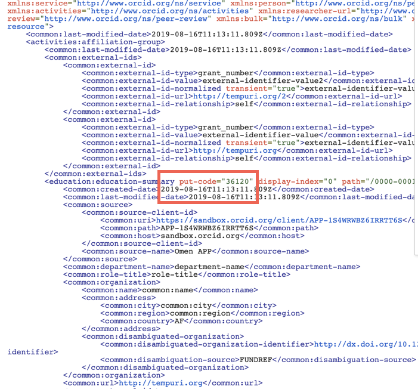
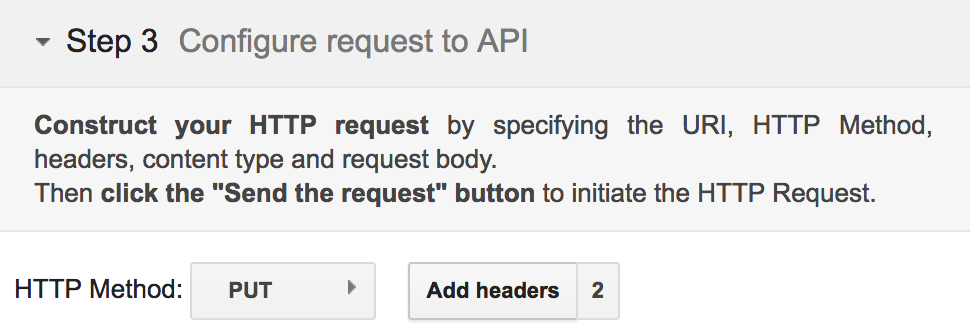
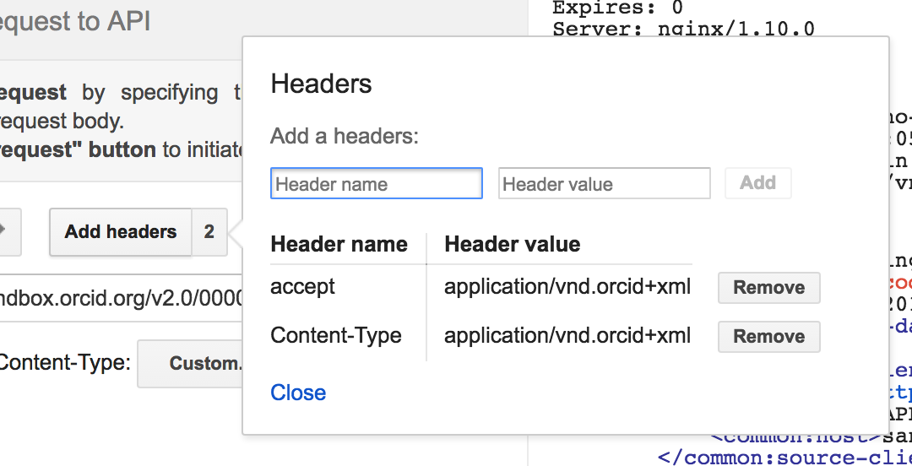
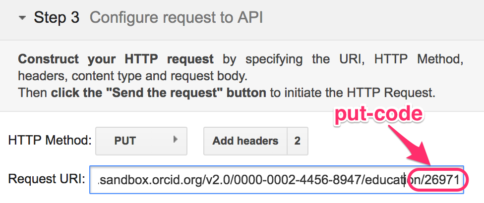
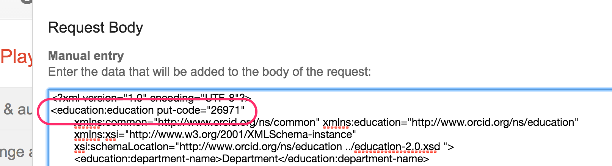
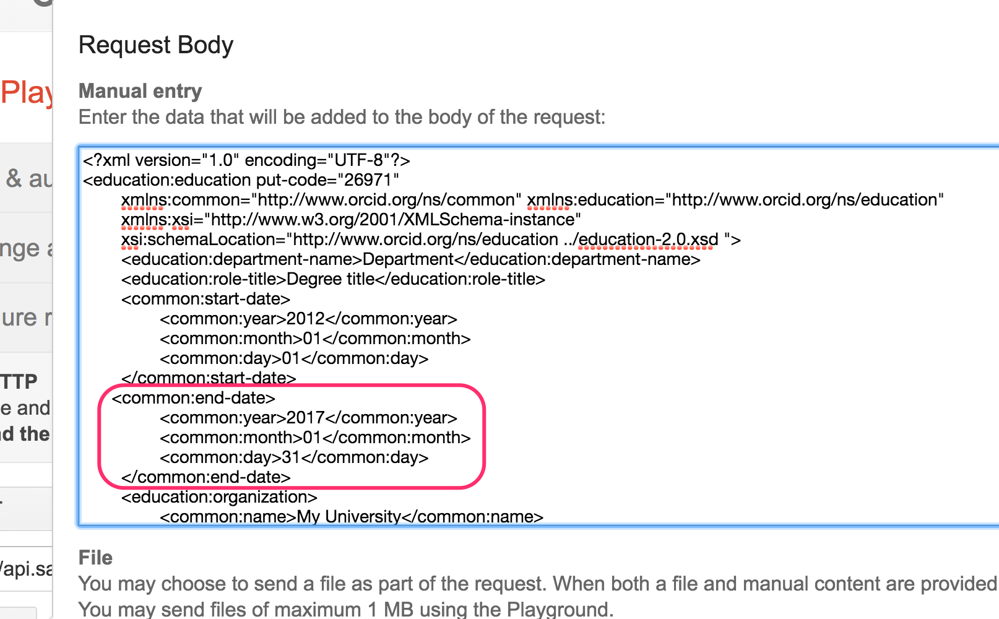
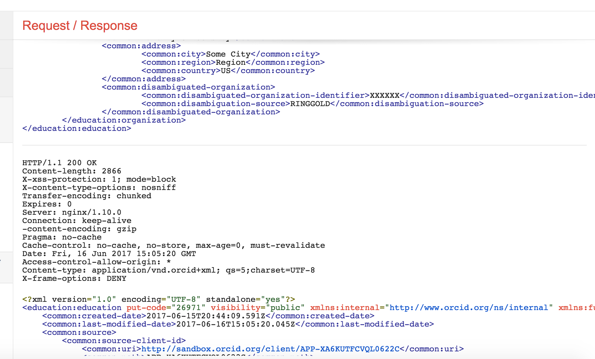
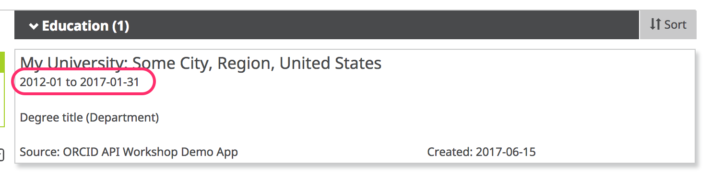

6. PUT: Update an affiliation
In a real-world situation, you may need to update a researcher's affiliation. In this section, we'll update our education affiliation to include an end date.
A little about put codes
Put codes are short numeric codes that reference a particular item on the ORCID record. You use the put code with the API calls to update, delete or read a particular item (as opposed to a summary of items.)
When you post an item to a researcher's record, the API response will contain the put code for that item. You can store the put code to use it later if you need to read, update, or delete that item.
To find out the put code for a particular item we don't have, we just need to read the record or a summary of the section where that item is located. The put code for the item we want to modify will be returned in the response.
In the example below we are updating a single education item.
Update an education affiliation
Note: if you saved the put code for your education affiliation, you can skip to step 4 below. If you didn't save the put code, please start with step 1 below.
-
First we need to get a put code for the education affiliation you just added so open a new Google Playground window and set it up following the first 4 steps from the Read the record.
-
This time in the Request URI field enter
https://api.sandbox.orcid.org/v3.0/0000-XXXX-XXXX-XXXX/educations. Note that we have added/educationsto the end of the URI and that it is plural. This means we are fetching a summary of all the education items on this record, not just one (we would put it singular and added the/put-codeof the item at the end) -
Hit the 'Send the request' and you should see something like the image below in the Request/Response section. Find the put-code for the education affiliation that you added in the previous section (it will be a different number to the one highlighted here).
 -
Change HTTP Method to PUT
 -
Click Add Headers and make sure that
AcceptandContent-typeare both set toapplication/vnd.orcid+xml
 -
In the Request URI field enter:
https://api.sandbox.orcid.org/v3.0/[ORCID ID]/education/[PUT CODE]
Replace [ORCID ID] with the iD for your Sandbox record, format XXXX-XXXX-XXXX-XXXX and [PUT CODE] with the put-code for your education affiliation
 -
Grab the XML from the POST section again and the click Enter request body and paste it in.
-
Inside the
<education:educationtag, addput-code=[PUT CODE]
Replace [PUT CODE] with the put-code for your education affiliation, ex<education:education put-code="26971"
 -
Copy the XML below which includes a start and end date for your education affiliation and paste it beneath the
</common:role-title>tag and above the<common:organization>tag (as seen on the screenshot below)<common:start-date> <common:year>1948</common:year> <common:month>02</common:month> <common:day>02</common:day> </common:start-date> <common:end-date> <common:year>1948</common:year> <common:month>02</common:month> <common:day>02</common:day> </common:end-date>

-
Click Close.
-
Click Send the Request.
-
The results will appear in the Request/Response section at right. Scroll to the bottom – if you see HTTP/1.1 200 OK, your education affiliation was successfully updated! If you see an error message, check that the header values in Add headers have not been changed to garbled text, ex:
application%2Fvnd.orcid%2Bxml"
 -
Visit the public view of your Sandbox record at
https://sandbox.orcid.org/[ORCID ID]to see your updated education affiliation.
